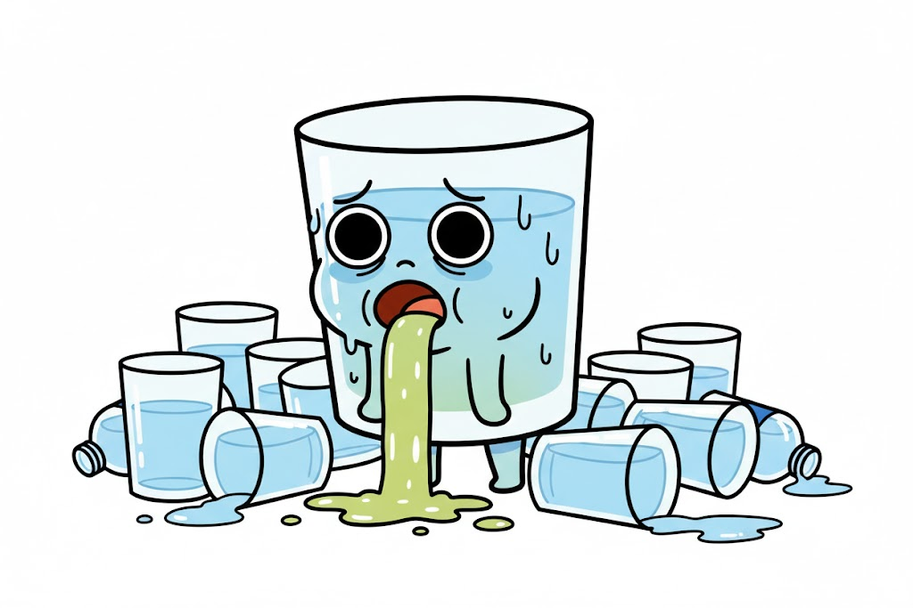

あなたの酒タイプは…

「お酒は弱いが、しっかり反省」面倒な酔い方をするが、翌日には全ての記憶を回収し、深く反省する。お冷が大好き。
基本的特徴：謝罪駆動型の愛されキャラ
お酒が弱く、自分の限界もわかっているはずなのに、場のノリに合わせようとして毎度オーバーフローを起こします。しかし、その失態を翌朝の圧倒的な「謝罪スピード」と「誠実なアフターフォロー」で完全に相殺する、驚異的なリカバリー能力を持っています。失敗を恐れない（というか忘れる）挑戦者です。
飲み会での特徴：水分補給のハイジャック
酔いが回ると、まるで生存本能のように隣の人の水を奪って飲み干します。「本当にすみません、迷惑かけました…」が口癖ですが、その数分後にはまた別の失態を演じている、矛盾の塊のような存在。翌朝、送った覚えのない熱い長文メッセージを読み返し、布団の中で悶絶するのがお決まりのパターンです。
長所と魅力：憎めない人間味と愛嬌
完璧じゃないからこそ、周囲の保護欲を最大限に引き出します。あなたのやらかしは、翌週のランチタイムの格好のネタとなり、張り詰めた職場の空気を和ませる「天然の中和剤」としての役割を果たしています。愛される才能の持ち主です。
【自己管理能力】
飲む前に「自分の在庫（肝臓のキャパ）」を正確に把握する習慣を。リカバリー能力は高いですが、たまにはやらかさない平和な夜を作っても誰も怒りませんよ。